Regolamento del gioco
Scopo del gioco
Lo scopo del gioco è totalizzare il punteggio maggiore possibile, cio è possibile completando righe di
tetronimi, ovvero dei "pezzi" che cadono nel tabellone e sono muovibili a destra, sinistra e in basso
dal giocatore utilizzando i tasti
A, S, D
.
Inoltre, è possibile ruotare i tetronimi in senso orario o antiorario, rispettivamente con i tasti
Q, E
e far precipitare immediatamente il pezzo con il tasto
W
.
Novità
Tetris Plus aggiunge ai classici tetronimi anche dei blocchi speciali, ognuno con diverse funzioni e indicati da un blocco quadrato di dimensione 2x2 con sopra un'icona che li distingue. Qui di seguito vengono listati tutti i blocchi speciali e le loro funzioni:
- Block Destroyer  : Un blocco in grado di distruggere tutti i blocchi nella sua stessa riga.
- Dinamite  : Un blocco che elimina tutti i blocchi presenti fino a tre blocchi di raggio dall'esplosione
- Time Stopper  : Un blocco che allimpatto con altri tetromini o con il terreno interrompe per un tempo stabilito la naturale caduta dei tetromini, facendo in modo che questa sia legata solo al movimento del giocatore
-
Time Accelerator
 : Un blocco che all'impatto con altri tetromini o con il terreno velocizza la normale caduta al
terreno
dei tetromini
: Un blocco che all'impatto con altri tetromini o con il terreno velocizza la normale caduta al
terreno
dei tetromini
-
Mist Block
 : Un blocco che all'impatto con altri tetromini o con il terreno nasconde le ultime x file del
tabellone,
impedendo la visione della parte più bassa.
: Un blocco che all'impatto con altri tetromini o con il terreno nasconde le ultime x file del
tabellone,
impedendo la visione della parte più bassa.
-
Steel Block
 : Un tetromino speciale, identificato da un colore grigio metallo, che non può essere eliminato,
neanche se
si completa la fila in cui è presente.
: Un tetromino speciale, identificato da un colore grigio metallo, che non può essere eliminato,
neanche se
si completa la fila in cui è presente.
-
Steel Breaker
 : Se sono presenti blocchi d'acciaio li rimuove tutti, altrimenti diventa un blocco dinamite.
: Se sono presenti blocchi d'acciaio li rimuove tutti, altrimenti diventa un blocco dinamite.